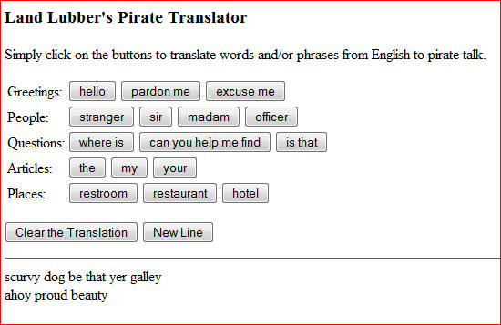

In 1995, John Baur and Mark Summers invented a new holiday, International Talk Like a Pirate Day. As they proposed it, on every September 19th, people all around the world would be united in common purpose by talking like a pirate (with lots of "Arrrrs" and "Ahoys" and the like). Since then, International Talk Like a Pirate Day has received widespread publicity, especially since columnist Dave Barry began lobbying for the holiday. At the official Talk Like a Pirate Day Web site, www.talklikeapirate.com, you can read about the history of the holiday, order official merchandise, and even experiment with a simple Web page that translates simple English phrases into pirate talk.
The following Web page is a framework for an alternative English-to-Pirate translator. As is, it contains two buttons, labeled "hello" and "stranger", and an empty page division. When the user clicks on a button, the corresponding Pirate word or phrase is added to the page division. For example, if the user were to click on the "hello" button, the word "ahoy" will appear in the page division. If she then clicks on the "stranger" button, then "scurvy dog" is added to the page division, resulting in the phrase "ahoy scurvy dog."
|
|
EXERCISE 1: The above Web page is named pirate.html and is included in your assignment folder. Save it to your A4 folder, open it with Notepad++ and verify that it behaves as described.As the page is currently written, multiple translations are awkward. If you finish translating one phrase and want to begin a new one, you must reload the page to clear the page division. To make repeated translations easier, add a button labeled "Clear the Translation" below the word/phrase buttons. When the user clicks on this button, the contents of the page division should be cleared. It can be achieved by assigning its INNERHTML attribute to be the empty string: document.getElementById('outputDiv').innerHTML = '';
EXERCISE 2: Extend pirate.html by adding new words and phrases. For each new word or phrase, you will need to add a button with the appropriate label and translated pirate phrase. At a minimum, you must add the new words and phrases below. However, feel free to add a larger vocabulary (see www.talklikeapirate.com for ideas).
English word/phrase Pirate equivalent Greetings: pardon me avast excuse me arrr People: sir matey madam proud beauty officer foul blaggart Questions: where is whar be can you help me find know ye is that be that Articles: the th' my me your yer Places: restroom head restaurant galley hotel fleabag inn
EXERCISE 3: As the vocabulary of your pirate translator grows, the buttons in the page can appear cluttered. In particular, finding the button corresponding to a desired word or phrase can become a chore. Add an HTML table to your page to organize the buttons by category. For example, all greetings should appear together on the same row, with the label "Greetings:" in the left column. Similarly, all people should be grouped together on a row with the text label "People:", and so on for each category of speech. The screen shot below shows a sample page using a table to organize the layout.Try the example below:
EXERCISE 4: Allow for multiple translations to appear on the page, add a button labeled "New Line" below the word/phrase buttons. When the user clicks on this button, and then tries different translation, the new translation appears below the previous one. It can be achieved by adding </br>:
document.getElementById('outputDiv').innerHTML = document.getElementById('outputDiv').innerHTML + '<br>';

EXERCISE 5: Locate two public domain pirate-themed images to decorate your page. One of these images should appear centered at the top of your page. When the user moves the mouse moves over the IMG element, its SRC should switch to the other image, then back again when the user moves the mouse of.